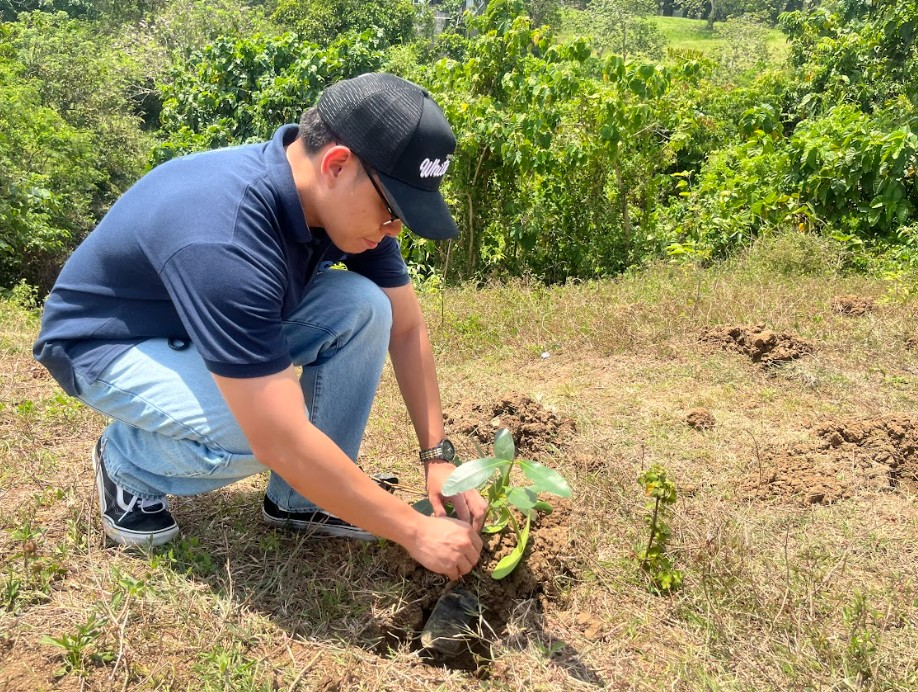
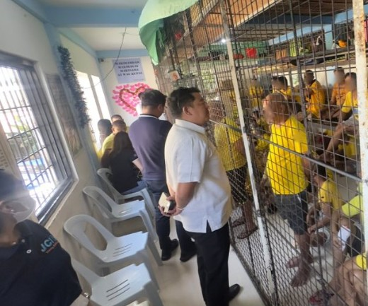
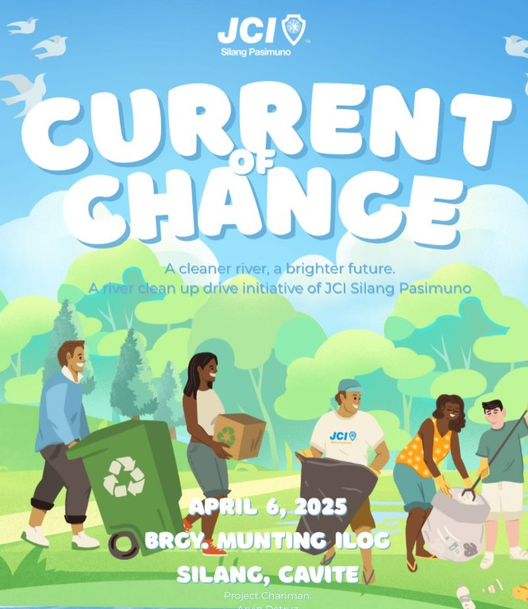
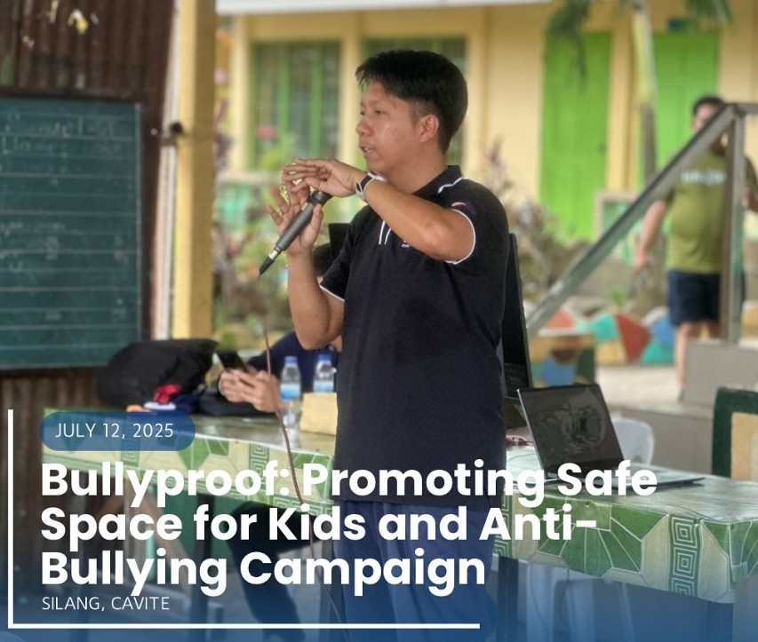
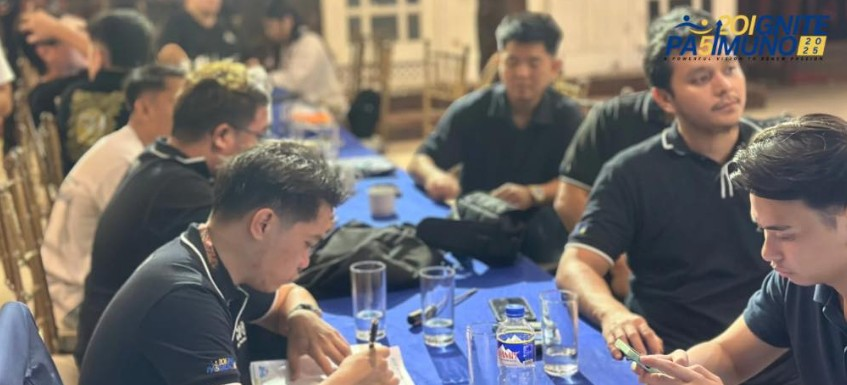
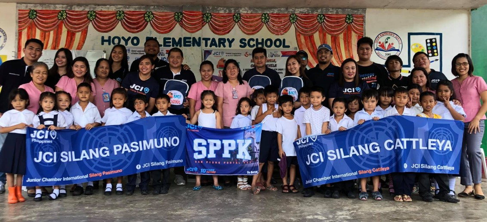
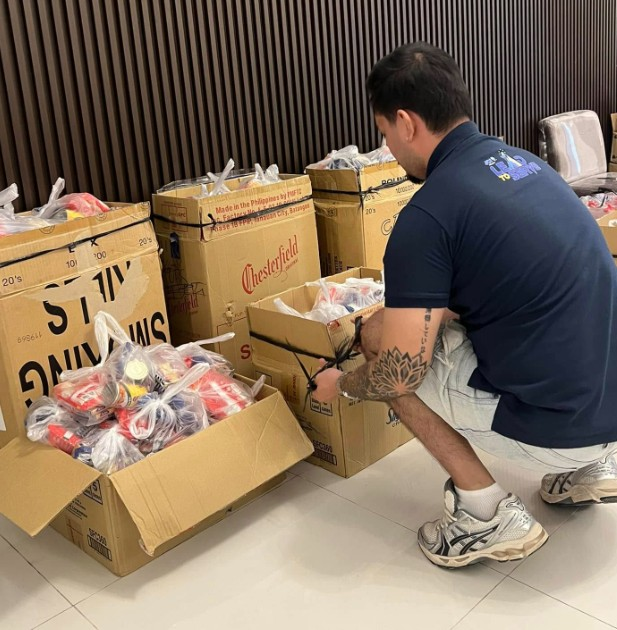
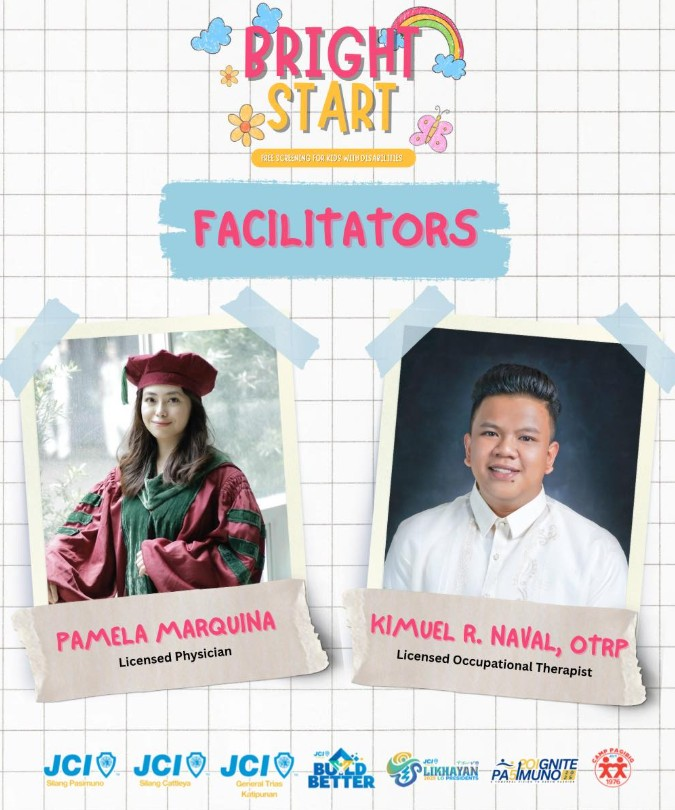
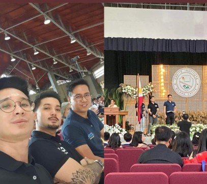
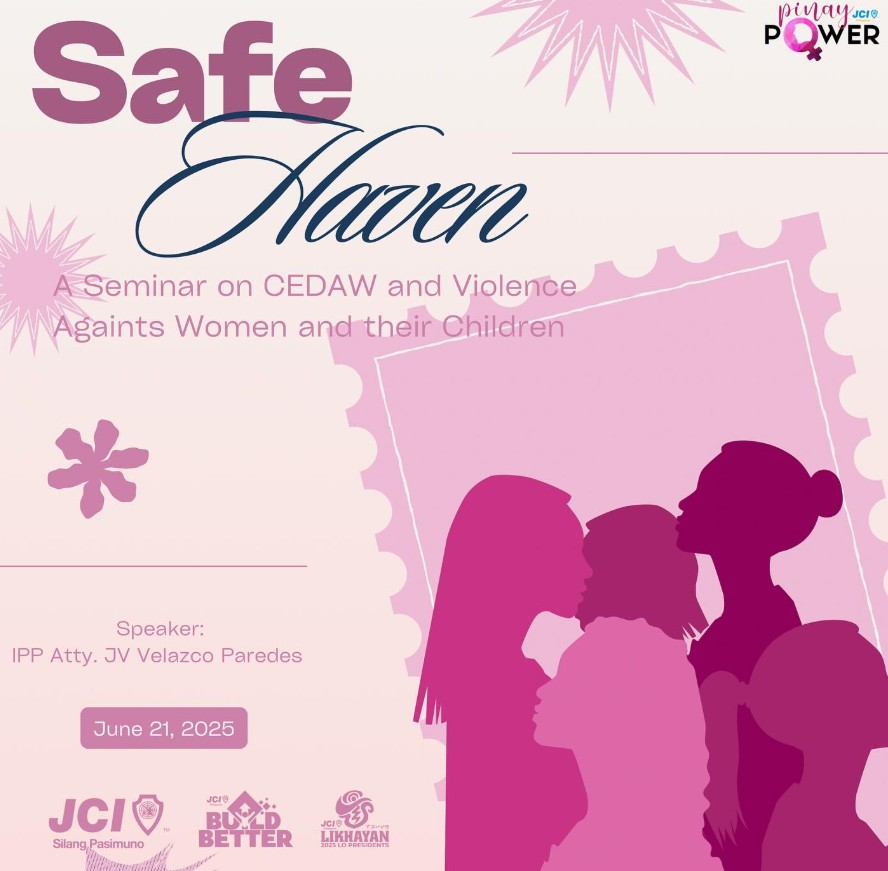

Our Projects
Discover our flagship initiatives and community-driven programs that empower, inspire, and create lasting impact in Silang and beyond.

Branching for Tomorrow
Environmental sustainability and tree-planting programs that promote climate action and ecological awareness.

Usapang Legal
Free legal consultation drives aimed at educating and empowering marginalized communities with access to legal rights and remedies.

Current of Change
Clean water access and sanitation improvement initiatives that support healthier and more dignified living conditions.

Bully Proof
Anti-bullying workshops, youth safe space advocacy, and wellness support focused on protecting students mental health and rights.

Mind Matters
Campaigns and sessions raising mental health awareness among youth, including stress management and psychological first aid.

Bags to School
Distribution of school kits and educational materials to underprivileged students to encourage school readiness and learning equity.

Oplan Kaagapay
Rapid response relief operations providing food packs, essentials, and support to communities affected by disasters or emergency.

BrightStart
A flagship advocacy focused on early intervention and equal opportunity—offering free developmental screenings and consultations for children with disabilities in partnership with allied foundation.

YLEA Young Leaders Excellence Awards
An annual recognition program honoring outstanding student leaders and youth advocates in Silang and surrounding areas.

Safe Haven
Outreach projects that support displaced, abused, or vulnerable families—especially women and children—through education, livelihood, and relief.